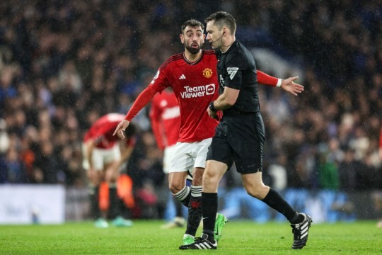

Premier League referee Jarred Gillett will make history when he wears a video camera during Monday night’s game between Crystal Palace and Manchester United.
Gillett will wear the ‘Ref Cam’ as part of a one-off programme by Premier League Productions aiming to shed light on the demands of a referee.
The Australian will wear the head-mounted device – instead of a chest camera – which is connected to the referee’s usual communications systems.
The use of such a device is set to be a one-off, while Gillett’s camera footage from Selhurst Park will not be broadcast live on the evening.
A statement on the Premier League website read: ‘In a Premier League first, referee Jarred Gillett will wear a “RefCam” during the Crystal Palace v Manchester United fixture on Monday 6 May, as part of filming for a one-off short programme promoting Match Officials.
‘This footage will not be broadcast live but fans will be able to view it later in the year as part of a programme being produced by Premier League Productions (PLP) aimed at offering further insight and education into the demands of officiating in the Premier League.‘The technology comprises a head-mounted device which is integrated into the usual referee communications system. ‘Its one-off use for educational purposes has been approved by The IFAB, the Premier League, PGMOL and both clubs. We would like to thank Crystal Palace and Manchester United for their support with this project.’
While Monday’s use of ‘RefCam’ is a first for the Premier League, the concept has been trialled before in other games. Last summer, referee Rob Jones wore a camera for a Summer Series match between Chelsea and Brighton in Philadelphia
.recently, the Bundesliga produced a similar documentary after referee Daniel Schlager wore a camera for the 2-2 draw between Frankfurt and Wolfsburg in March.
In grassroots English football, the use of body cameras was trialled in around 500 matches last year and was set to be re-introduced in eight country associations this season.
Manchester United travel to Selhurst Park on Monday night sitting eighth in the Premier League, while hosts Crystal Palace are 14th.
